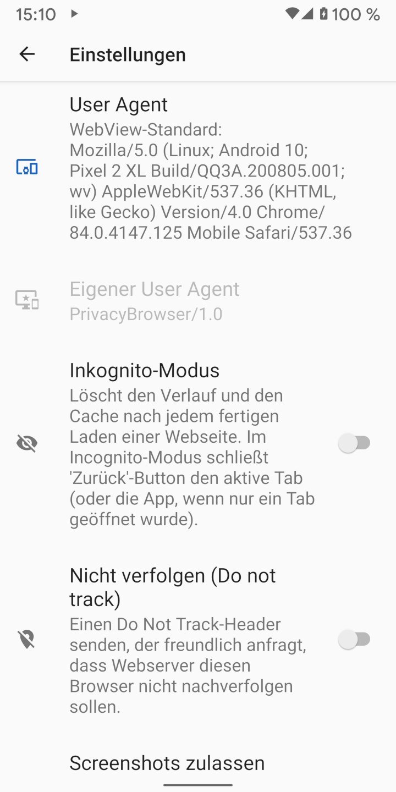

Wenn sich Internet-Browser mit Webseiten verbinden, senden Sie automatisch den sog. "User-Agent", welcher den Browser und dessen Anzeige-Fähigkeiten ausweist. Der Webserver kann diese Informationen dann nutzen, um verschiedene Versionen der Webseite an unterschiedliche Browser auszuliefern. Zum Beispiel haben viele Internet-Seiten unterschiedliche Versionen für Desktop- und Mobil-Browser, damit die Seiten in Anhängigkeit von der Displaygrösse möglichst optimal genutzt werden können.
In der Voreinstellung nutzt Privacy Browser seinen eigenen User-Agent, welcher PrivacyBrowser/1.0 lautet.
Damit wird lediglich ein Minimum an Informationen an den jeweiligen Webserver gesendet.
Da jedoch manche Webserver diesen User-Agent nicht als mobilen Browser erkennen, liefern sie ggf. die Desktop-Version der betreffenden Webseite aus.
Im Vergleich dazu plaudert der Standard-User-Agent von WebView eine grosse Menge an Informationen über die Hard- und Software des genutzten Geräts aus. Wird auf der Einstellungen-Seite von Privacy Browser WebView-Standard als User-Agent ausgewählt, wird der dadurch übermittelte User-Agent angezeigt. Der Screenshot unterhalb zeigt ein Pixel 2 XL mit Android 10 und Android WebView 84.0.4147.125. Die meisten Webserver erkennen diesen User-Agent als Mobil-Browser und liefern eine Mobil-Version der Seite aus, so eine solche existiert.
Der User-Agent beinhaltet normalerweise genügend Informationen, dass nur wenige Besucher einer Webseite denselben haben. Wenn der User-Agent daher mit anderen nicht-eindeutigen Identifizierungs-Informationen kombiniert wird, kann dies ausreichen, um einen eindeutigen Fingerabdruck zu ergeben. Die Electronic Frontier Foundation hat das Werkzeug Cover Your Tracks geschaffen, um zu zeigen, wie viele Informationen aus diesen Quellen gesammelt werden kann. Wenn dieser Test mit aktiviertem JavaScript absolviert wird, steigt die Menge der offengelegten Informationen drastisch an. Browser Leaks und Am I Unique sind ebenfalls gute Quellen für Informationen zu diesem Thema.
Privacy Browser bietet verschiedene Voreinstellungen für den User-Agent an, um sich als gebräuchliche Browser und Betriebssysteme auszugeben.
Dabei gilt grundsätzlich: Je unüblicher der User-Agent ist, des einfacher ist das Tracking.
Wenn Privacy Browser gebräuchlicher wird und viele Personen den User-Agent PrivacyBrowser/1.0 nutzen, wird dies eine gute Wahl für die Privatsphäre sein.
Firefox und Chrome sind aktuell die gebräuchlichsten Browser.
Da sie jedoch häufig aktualisiert werden und in deren User-Agent auch die jeweilige Browser-Version mitsenden, kann es sein,
dass die in Privacy Browser mitgelieferten User-Agents für Firefox und Chrome wiederum in den Server-Logs auffallen.
Manche Websites funktionieren nicht korrekt, wenn sie einen User-Agent nicht erkennen. Wird für derartige Webseiten in den Domänen-Einstellungen von Privacy Browser der User-Agent WebView Standard oder ein anderer gebräuchlicher User-Agent ausgewählt, verschwinden diese Probleme meist. Androids WebView erlaubt keinen leeren User Agent. Wenn das der Fall ist, wird der Standard-User Agent an den Server gesandt.